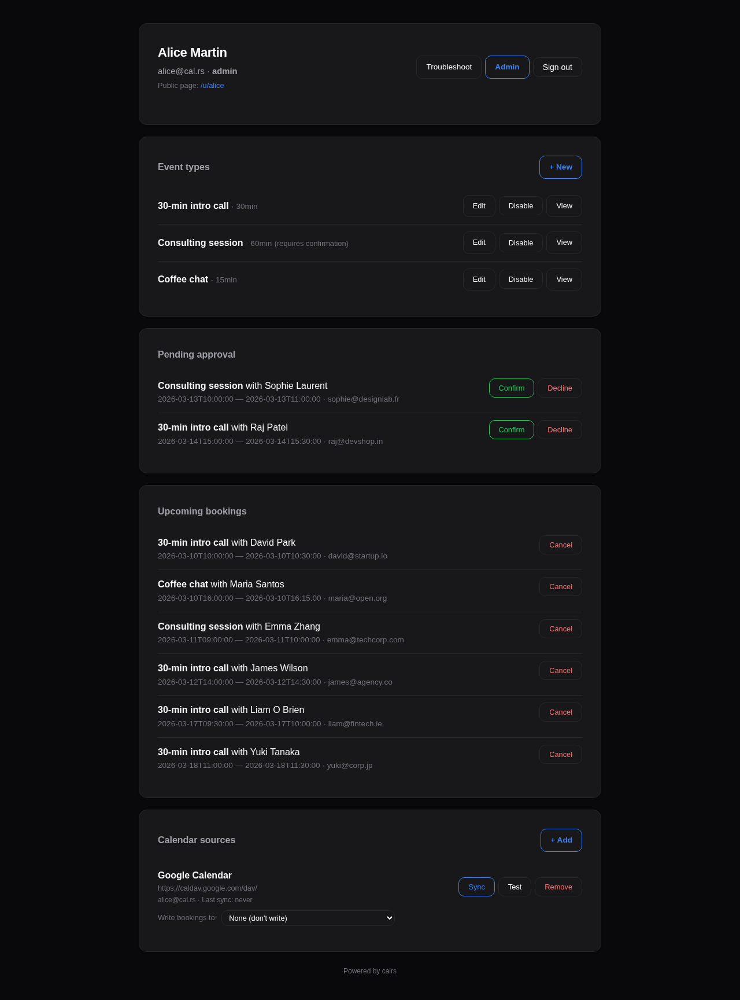
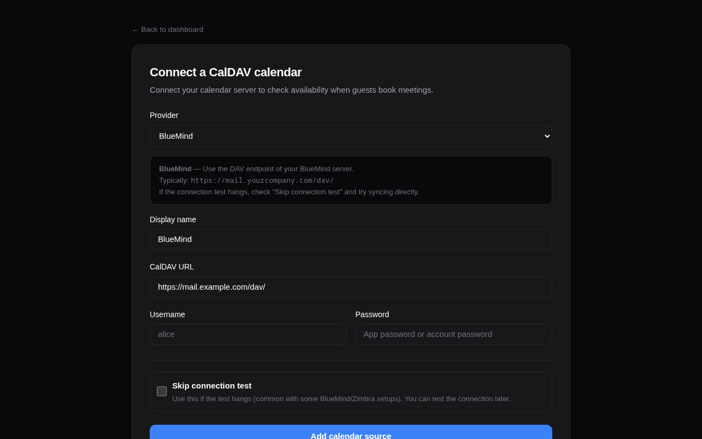
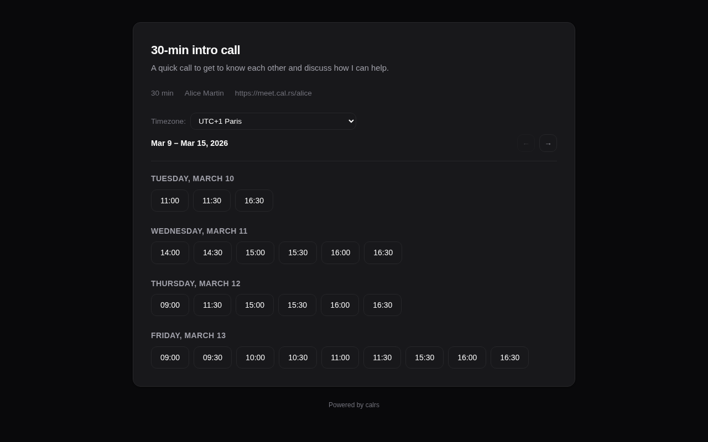
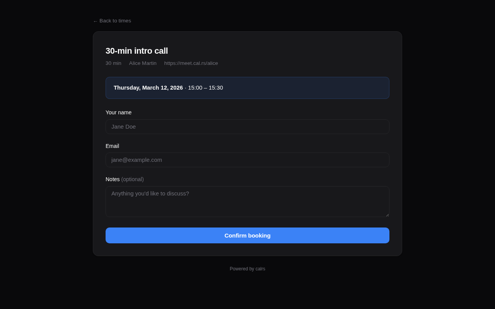
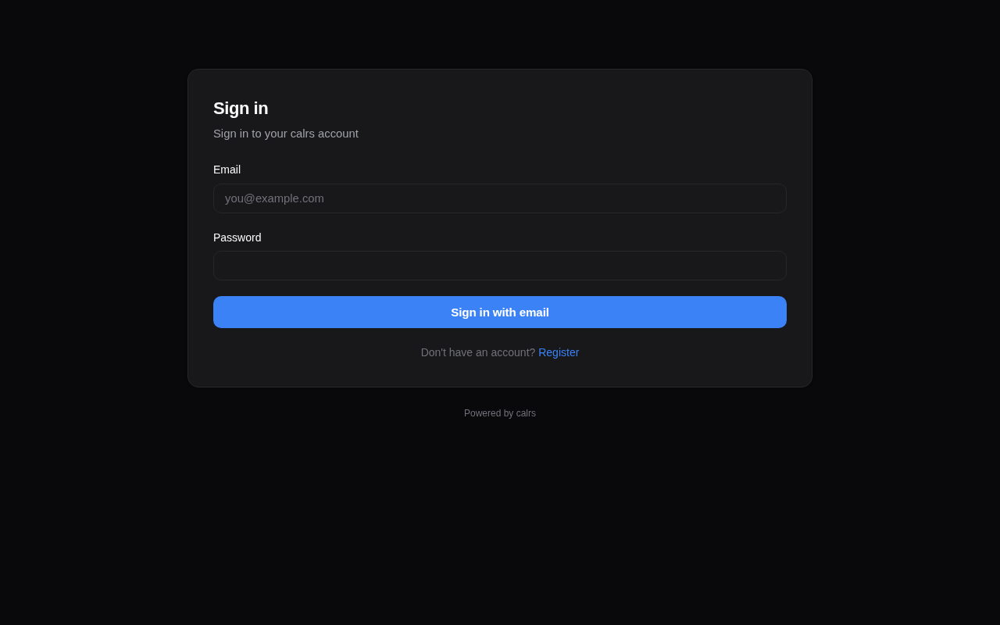
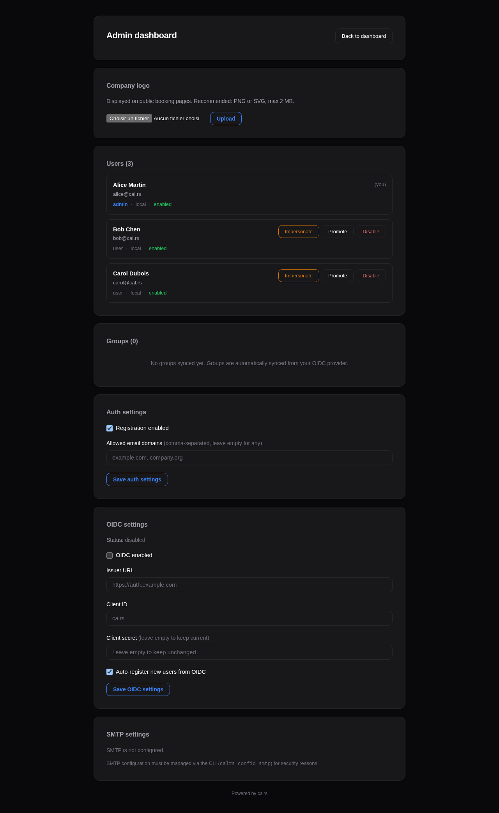
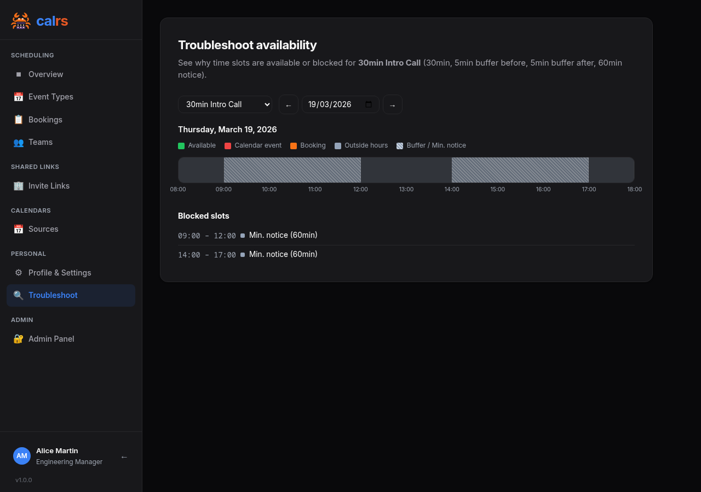

calrs
Fast, self-hostable scheduling. Like Cal.com, but written in Rust.
calrs is an open-source scheduling platform. Connect your CalDAV calendar (Nextcloud, Fastmail, BlueMind, iCloud, Google…), define bookable meeting types, and share a link. No Node.js, no PostgreSQL, no subscription.
Key features
- CalDAV sync — pull events from any CalDAV server for free/busy computation, with multi-VEVENT support for recurring event modifications
- CalDAV write-back — confirmed bookings are automatically pushed to your calendar
- Availability engine — computes free slots from availability rules + calendar events
- Recurring events — RRULE expansion (DAILY/WEEKLY/MONTHLY with INTERVAL, UNTIL, COUNT, BYDAY, EXDATE) blocks availability correctly
- Event types — bookable meeting templates with duration, buffers, minimum notice
- Booking flow — public slot picker, booking form, email confirmations with
.icsinvites - Email approve/decline — approve or decline pending bookings directly from the notification email
- HTML emails — clean, responsive HTML notifications with plain text fallback
- Teams — unified scheduling across team members with round-robin or collective modes
- Timezone support — guest timezone picker with browser auto-detection; CalDAV events are converted from their original timezone to your host timezone, so availability is always accurate regardless of where your calendar events were created
- Authentication — local accounts (Argon2) or OIDC/SSO (Keycloak, Authentik, etc.)
- Web dashboard — manage event types, calendar sources, pending approvals, bookings
- Dark/light theme — manual toggle (System/Light/Dark) on public pages and dashboard settings
- Admin panel — user management, auth settings, OIDC config, SMTP status, impersonation
- Structured logging —
tracing+tower-httpfor production observability, configurable viaRUST_LOG - Three-level visibility — public (listed on profile), internal (any team member generates invite links for external contacts), private (invite-only by owner)
- Availability overrides — block specific dates or set custom hours per event type
- Security hardening — CSRF protection, booking rate limiting, input validation, double-booking prevention
- Availability troubleshoot — visual timeline showing why slots are blocked
- SQLite storage — single-file WAL-mode database, zero ops
- Markdown descriptions — bold, italic, links, and inline code in user bio, event type descriptions, and team descriptions. Formatting toolbar with live preview on all description fields
- Onboarding — getting-started checklist and guided action cards on the dashboard overview
- Single binary — no runtime dependencies

How it works
- Connect your CalDAV calendar (or multiple calendars)
- Sync events so calrs knows when you’re busy
- Create event types with your availability schedule
- Share your booking link (
/u/yourname/meeting-slug) - Guests pick a slot, fill in their details, and book
- Both parties get an email with a calendar invite
- The booking appears on your CalDAV calendar automatically
License
AGPL-3.0 — free to use, modify, and self-host.
Getting Started
Installation
See Deployment for Docker, systemd, and binary install options.
For development:
cargo build --release
First-time setup
Option 1: Web UI (recommended)
- Start the server:
calrs serve --port 3000 - Open
http://localhost:3000in your browser - Register an account — the first user automatically becomes admin
- From the dashboard, add a CalDAV source and create your first event type
Option 2: CLI
# Create an admin user
calrs user create --email alice@example.com --name "Alice" --admin
# Connect your CalDAV calendar
calrs source add --url https://nextcloud.example.com/remote.php/dav \
--username alice --name "My Calendar"
# Pull events
calrs sync
# Create a bookable meeting type
calrs event-type create --title "30min intro call" --slug intro --duration 30
# Check available slots
calrs event-type slots intro
# Start the web server
calrs serve --port 3000
Environment variables
| Variable | Description | Default |
|---|---|---|
CALRS_DATA_DIR | Directory for the SQLite database | Platform-specific (XDG) |
CALRS_BASE_URL | Public URL (needed for OIDC callbacks and email action links) | http://localhost:3000 |
Data directory
calrs stores everything in a single SQLite database (calrs.db) inside the data directory. By default this follows XDG conventions:
- Linux:
~/.local/share/calrs/ - macOS:
~/Library/Application Support/calrs/
Override with CALRS_DATA_DIR or --data-dir.
Quick test
After setup, your booking page is available at:
/u/yourname— your profile listing all event types/u/yourname/intro— the slot picker for the “intro” event type
CalDAV Integration
calrs connects to any CalDAV server to read your calendar for free/busy computation and optionally write confirmed bookings back.
Connecting a calendar source
From the web dashboard
- Go to Dashboard > Calendar sources > + Add
- Select your provider (BlueMind, Nextcloud, Fastmail, etc.) — the URL is auto-filled
- Enter your username and password
- Click Add source
The connection is tested automatically before saving. Use “Skip connection test” if your server doesn’t respond to OPTIONS requests (e.g., BlueMind).

From the CLI
calrs source add --url https://nextcloud.example.com/remote.php/dav \
--username alice --name "Work Calendar"
# Skip connection test if needed
calrs source add --url https://mail.company.com/dav/ \
--username alice --name "BlueMind" --no-test
Provider URLs
| Provider | CalDAV URL |
|---|---|
| BlueMind | https://mail.yourcompany.com/dav/ |
| Nextcloud | https://cloud.example.com/remote.php/dav |
| Fastmail | https://caldav.fastmail.com/dav/calendars/user/you@fastmail.com/ |
| iCloud | https://caldav.icloud.com/ |
https://apidata.googleusercontent.com/caldav/v2/your@gmail.com/ | |
| Zimbra | https://mail.example.com/dav/ |
| SOGo | https://mail.example.com/SOGo/dav/ |
| Radicale | https://cal.example.com/ |
Tip: Use app-specific passwords for Fastmail, iCloud, and Google.
Auto-discovery
calrs follows the CalDAV standard (RFC 4791) for discovery:
- PROPFIND on the base URL to find the
current-user-principal - PROPFIND on the principal to find the
calendar-home-set - PROPFIND on the calendar home to list all calendars
- Filters to actual
calendarcollections (skips inbox, outbox, tasks, etc.)
Syncing
# Sync all sources
calrs sync
# Full re-sync (ignore sync tokens)
calrs sync --full
From the dashboard, click Sync on any source to trigger a sync.
Sync pulls all VEVENT data from your calendars and stores it in the local SQLite database. Events are upserted by UID (and RECURRENCE-ID for modified instances), so re-syncing is safe.
Multi-VEVENT resources
Some CalDAV servers (notably BlueMind) bundle recurring events and their modified instances into a single CalDAV resource containing multiple VEVENTs. calrs splits these and stores each VEVENT as a separate row:
- The parent event has the RRULE and is stored with its UID
- Modified instances have a RECURRENCE-ID and are stored alongside the parent with a composite unique key
(uid, recurrence_id) - This ensures modified occurrences correctly block (or free) availability
CalDAV write-back
When a booking is confirmed, calrs can automatically push it to your CalDAV calendar as a VEVENT. When a booking is cancelled, the event is deleted.
Setup
- Sync your calendar source at least once (so calrs knows which calendars exist)
- On the dashboard, find your source under “Calendar sources”
- Use the “Write bookings to” dropdown to select which calendar should receive bookings
- Select “None” to disable write-back
How it works
- On confirmation: calrs generates an ICS event and PUTs it to
{calendar-href}/{booking-uid}.ics - On cancellation: calrs DELETEs the event from the same path
- The booking tracks which calendar it was pushed to, so cancellation always targets the right calendar
- If no write calendar is configured, write-back is silently skipped (emails still work)
- Write-back works for individual bookings, group round-robin bookings, and pending-then-confirmed bookings
Managing sources
# List all sources
calrs source list
# Test a connection
calrs source test <id-prefix>
# Remove a source (cascade-deletes calendars and events)
calrs source remove <id-prefix>
From the dashboard: Sync, Test, and Remove buttons are available for each source.
Credentials
Passwords are hex-encoded and stored in the SQLite database. This is not encryption — it prevents accidental display in logs but does not protect against database access. Secure your data directory appropriately.
Event Types
Event types are bookable meeting templates. Each one defines the duration, availability schedule, and booking rules.
Meeting types overview
calrs supports seven distinct booking scenarios:
| Type | Who books? | How? | Assigned to | Use case |
|---|---|---|---|---|
| Personal (public) | Anyone | Listed on your profile | You | Freelancer’s “30min intro call” |
| Personal (internal) | Invited guests | Any colleague generates a link | You | Senior engineer: teammates share a “Code Review” link with external contributors |
| Personal (private) | Invited guests | You send an invite link | You | Executive coaching for selected clients |
| Team (public) | Anyone | Listed on team page | Round-robin | Public support call page |
| Team (internal) | Invited guests | Any employee generates a link | Round-robin | Cross-team: Sales shares Support links with customers |
| Team (private) | Invited guests | Owner sends invite links | Round-robin | Demo team sends links to qualified leads |
| Dynamic group | Anyone with the URL | Ad-hoc link: /u/alice+bob/slug | Event type owner | One-off sales call needing engineering support |
Personal vs team: Personal event types book time on your calendar only. Team event types show combined availability (any member free) and assign the booking to the least-busy member via round-robin.
Dynamic group links: Ad-hoc collective meetings without creating a team — see Dynamic group links below.
Multi-timezone teams: For teams spread across timezones, set a wide availability window (e.g., 06:00–23:00) and let each member’s synced CalDAV calendar handle the blocking. The slot picker naturally shows the union of all members’ real availability — see Teams > Multi-timezone teams for details.
Creating an event type
From the dashboard
Go to Dashboard > Event types > + New and fill in:
- Title — display name (e.g., “30-minute intro call”)
- Slug — URL path (e.g.,
introgives/u/yourname/intro) - Duration — meeting length in minutes
- Buffer before/after — padding between meetings (prevents back-to-back bookings)
- Minimum notice — how far in advance guests must book (in minutes)
- Requires confirmation — if checked, bookings start as “pending” and you approve from the dashboard
- Additional guests — allow guests to invite additional attendees (0, 1, 3, 5, or 10 max)
- Location — video link, phone number, in-person address, or custom text
- Availability schedule — which days and hours you’re available
Description fields support Markdown formatting (bold, italic, links) with a toolbar and live preview.

From the CLI
calrs event-type create \
--title "30min intro call" \
--slug intro \
--duration 30 \
--buffer-before 5 \
--buffer-after 5
Calendar selection
When you have multiple CalDAV calendars, you can choose which calendars block availability for each event type. For example, a “Work meeting” event type can check only the work calendar, while a “Personal chat” checks only the personal calendar.
From the dashboard form, select the calendars under the Calendars section. Only calendars marked as “busy” (is_busy=1) appear.
Default behavior: If no calendars are selected, all busy calendars are checked — same as before. This is fully backward-compatible.
Availability schedule
Each event type has its own availability rules. By default: Monday–Friday, 09:00–17:00.
From the dashboard form, you can set:
- Which days of the week are available (checkboxes)
- Start and end time for available hours
The availability engine intersects these rules with your synced calendar events (filtered by selected calendars) and existing bookings to compute free slots.
Booking limits
Control how slots are displayed and how often the event type can be booked.
One slot per day
Enable “One slot per day” to show only the earliest available time each day. The guest sees one slot per day instead of all available windows — useful for daily standups, check-ins, or any event where you want at most one booking per day.
Frequency limits
Enable “Limit booking frequency” to cap how many bookings can be made per time period. You can combine multiple limits — for example, max 2 per day AND 8 per week. Available periods: day, week, month, year. When a limit is reached, the booking form rejects new bookings for that period.
Both settings are configured via toggle switches in the Booking limits card of the event type form.
Calendar views
The guest slot picker supports three views, switchable via icons in the calendar header:
| View | Description |
|---|---|
| Month (default) | Month calendar grid with a slot list panel on the right |
| Week | 7-day columns with time slots listed under each day |
| Column | Days listed as rows with all time slot pills inline |
The guest’s chosen view is remembered in their browser. Hosts can set which view guests see by default from the Booking options card in the event type form.
Slot computation
Available slots are computed by:
- Generating candidate slots from availability rules (day of week + time range)
- Filtering out slots that overlap with calendar events (from CalDAV sync)
- Filtering out slots that overlap with confirmed bookings
- Applying buffer times (before and after each slot)
- Removing slots that violate minimum notice (too close to now)
- If “one slot per day” is enabled, keeping only the earliest slot per day
# View available slots for the next 7 days
calrs event-type slots intro
# View slots for the next 14 days
calrs event-type slots intro --days 14
Location
Event types support four location types:
| Type | Description |
|---|---|
link | Video meeting URL (Zoom, Meet, etc.) |
phone | Phone number |
in_person | Physical address |
custom | Free-text description |
The location is displayed on the public booking page, in confirmation emails, and in .ics calendar invites.
Enabling/disabling
Event types can be toggled on/off from the dashboard without deleting them. Disabled event types don’t show up on your public profile and return 404 on their booking page.
Visibility
Event types have three visibility levels, set from the Visibility dropdown in the event type form:
| Level | Available for | Listed publicly? | Who can create invite links? | Badge |
|---|---|---|---|---|
| Public | Personal + Team | Yes | N/A (no invite needed) | (none) |
| Internal | Personal + Team | No | Any authenticated user | blue “internal” |
| Private | Personal + Team | No | Event type owner only | indigo “private” |
Internal event types
Internal visibility is designed for cross-team and cross-person booking within an organization. It is available for both personal and team event types.
Typical use case (team): A Support team creates an internal “Support Call” event type. When a Sales rep needs to put a customer in touch with Support, they go to the Invite Links page, click “Get link” next to “Support Call”, and paste the generated URL in a Slack message or email to the customer. The customer clicks the link, picks a slot, and books — the link expires after 7 days and can’t be reused.
Typical use case (personal): A senior engineer creates an internal “Code Review” event type. Any teammate can generate a one-time link from the Invite Links page and share it with an external contributor who needs a review session.
The Invite Links page (/dashboard/organization) lists all internal event types across the organization — both personal and team. Each event type has:
- Get link — generates a single-use invite link (expires in 7 days) and copies it to clipboard
- Invites — opens the full invite management page for custom expiry, multi-use links, and guest pre-fill
Internal vs private: Internal lets any colleague generate links on the fly — ideal for cross-org services like support, IT help desk, or personal event types that colleagues need to share on your behalf. Private restricts link distribution to the event type owner only — better when you want controlled access. See Teams > Private teams vs internal vs private event types for a detailed comparison.
Private event types
Private event types are hidden from public pages and only accessible via invite links sent by the event type owner or team admin.
Typical use case: A demo team creates a private team event type. Sales reps send personalized invites to qualified leads. The demo is automatically assigned to the least-busy team member via round-robin.
Invite links
Both internal and private event types use booking invites to grant access:
- Go to Dashboard > Event Types (or Organization) and click Invite
- Fill in the guest’s name, email, and an optional personal message
- Choose an expiration (7, 14, or 30 days, or never) and whether to allow multiple bookings
- Click Send invite — the guest receives an email with a personalized booking link
The invite link takes the guest directly to the slot picker with the invite token embedded. Their name and email are pre-filled on the booking form. The token is validated at every step (expired, used-up, or invalid tokens are rejected).
Invite management
The invite management page (/dashboard/invites/{event_type_id}) shows:
- A “Get link” button at the top for one-click link generation — generates a single-use invite URL and copies it to your clipboard. No email form needed
- A form to send invites via email (with guest name, email, message, expiry, and usage options)
- A list of sent invites with status badges:
- Active — invite is valid and unused (or has remaining uses)
- Expired — past the expiration date
- Used — all uses consumed (for single-use invites)
- Delete button to revoke an invite
Availability overrides
Block specific dates or set custom hours per event type — perfect for holidays, conferences, or one-off schedule changes.
Go to Dashboard > Event Types > Overrides and add:
- Block entire day — no slots available on that date (e.g., company holiday)
- Custom hours — replace the weekly rules with specific time windows for that date (e.g., 08:00–12:00 only)
Multiple custom hour windows can be added for the same date (e.g., morning + afternoon with a lunch break). Overrides are visible in the Troubleshoot view with a banner showing when they’re active.
Public URLs

- Profile:
/u/yourname— lists all enabled, non-private event types - Slot picker:
/u/yourname/slug— shows available time slots - Booking form:
/u/yourname/slug/book?date=...&time=...— booking form for a specific slot - Invite booking: same URLs with
?invite={token}— for private event types accessed via invite links - Dynamic group:
/u/alice+bob+carol/slug— collective availability across multiple users (see below)
Dynamic group links
Dynamic group links let you create ad-hoc collective meetings by combining usernames in the URL — no team setup required.
How it works
Take any public event type URL and add other usernames with +:
/u/alice/intro → individual booking (Alice only)
/u/alice+bob/intro → collective booking (Alice & Bob)
/u/alice+bob+carol/intro → collective booking (Alice, Bob & Carol)
The first username owns the event type. Their event type settings (duration, buffer, availability rules) define the meeting. All participants’ calendars are checked — only slots where everyone is free are shown.

Building a dynamic group link
From the event type edit page, public personal event types show a Dynamic Group Link card at the bottom. Type a username to search — only users who have opted in are shown. Click to add them, and the URL is built live with a copy button.

Opt-out
Users can disable being included in dynamic group links from Profile & Settings. The checkbox “Allow others to include me in dynamic group links” is enabled by default. When disabled, the user won’t appear in the search dropdown and any URL containing their username will show an error.
CalDAV write-back
When a dynamic group booking is confirmed:
- The event is written to the first user’s (event type owner’s) CalDAV calendar
- Other participants are added as
ATTENDEEin the ICS event - CalDAV servers that support scheduling (Nextcloud, SOGo, etc.) automatically propagate the invite to participants’ calendars
Constraints
- Only works with public event types (not internal or private)
- Requires at least two usernames in the URL
- All users must have
allow_dynamic_groupenabled
Booking Flow
Guest experience
- Visit the booking page —
/u/host/meeting-slug(or via an invite link for private event types, or/u/host+other/slugfor dynamic group links) - Pick a timezone — auto-detected from the browser, changeable via dropdown
- Browse available slots — displayed as a week view, navigate with Previous/Next buttons
- Click a slot — opens the booking form
- Fill in details — name, email, optional notes (pre-filled from invite if applicable)
- Add guests — optionally invite additional attendees (if the event type allows it)
- Submit — booking is created
- Confirmation page — shows booking summary (including any additional attendees)
- Email — guest and any additional attendees receive a confirmation email with an
.icscalendar invite attached


Booking statuses
| Status | Description |
|---|---|
confirmed | Booking is active. Slot is blocked. Emails sent. |
pending | Awaiting host approval (when requires_confirmation is on). |
cancelled | Cancelled by host or guest. Slot is freed. |
declined | Declined by host (pending booking rejected). |
Confirmation mode
When an event type has requires confirmation enabled:
- Guest submits booking → status is
pending - Guest receives a “pending” email (no
.icsyet) - Host receives an “approval request” email with Approve and Decline buttons
- Host can approve/decline in two ways:
- From the email — click the Approve or Decline button (no login required, token-based)
- From the dashboard — go to Pending approval section and click Confirm or Decline
- On confirm: status becomes
confirmed, guest receives confirmation email with.ics, booking is pushed to CalDAV - On decline: status becomes
declined, guest receives a decline notification with optional reason
Note: The email action buttons require
CALRS_BASE_URLto be set. Without it, the host must use the dashboard.
Cancellation
From the dashboard, click Cancel on an upcoming booking:
- Optionally enter a reason
- Confirm the cancellation
- Both guest and host receive cancellation emails with a
METHOD:CANCEL.icsattachment - If the booking was pushed to CalDAV, the event is deleted from the calendar
Guest self-cancellation
Guests can cancel their own bookings via a link in the confirmation email:
- Click the “Cancel booking” link in the email
- Optionally enter a reason
- Confirm the cancellation
- Both guest and host are notified
The cancellation email correctly attributes who cancelled (host vs guest).
Reschedule
Bookings can be rescheduled without cancelling and rebooking. Both guests and hosts can initiate a reschedule.
Guest reschedule
Guests can reschedule their booking via the reschedule link in the confirmation or pending email:
- Click the “Reschedule” button in the email
- Pick a new time slot from the slot picker (the current booking’s slot is freed so it remains available)
- Confirm the new time
- The booking moves to
pendingstatus — the host must approve via email or dashboard - If the booking was previously pushed to CalDAV, the event is removed (re-pushed on approval)
Host reschedule
Hosts can reschedule from the dashboard:
- Go to Dashboard > Bookings and click Reschedule on a booking
- Pick a new time slot
- Confirm the new time
- The booking stays
confirmed— no approval needed - The CalDAV event is updated in place (same UID)
- The guest receives a reschedule notification with the updated
.icsinvite
Token regeneration
After each reschedule, the reschedule_token, cancel_token, and confirm_token are regenerated. This invalidates any previous email links, ensuring only the latest links work.
Edge cases
- Already cancelled/declined bookings cannot be rescheduled (error page shown)
- Self-conflict is handled: the booking being rescheduled doesn’t block its own new slot
- Group bookings keep the original
assigned_user_id(no re-running round-robin) - Reminder state is reset:
reminder_sent_atis cleared so a new reminder is sent for the updated time
Conflict detection
Before a booking is accepted, calrs checks for conflicts:
- Calendar events — from synced CalDAV sources
- Existing bookings — confirmed bookings on any event type
- Buffer times — the buffer before/after is included in the conflict window
- Minimum notice — slots too close to the current time are rejected
Additionally, a database-level unique index prevents two bookings from occupying the same slot, even if two guests submit simultaneously.
CalDAV write-back
When a booking is confirmed (either directly or via approval), calrs can push the event to the host’s CalDAV calendar. See CalDAV Integration > Write-back for setup.
Email notifications
If SMTP is configured, calrs sends emails at these moments:
| Event | Guest receives | Host receives |
|---|---|---|
| Booking confirmed | Confirmation + .ics REQUEST | Notification + .ics REQUEST |
| Booking pending | “Awaiting confirmation” notice | Approval request with Approve/Decline buttons |
| Booking declined | Decline notice (with optional reason) | — |
| Booking cancelled | Cancellation + .ics CANCEL | Cancellation + .ics CANCEL |
| Booking rescheduled (by host) | Reschedule notification + updated .ics | — |
| Reschedule request (by guest) | “Pending” notice with updated time | Reschedule approval request with Approve/Decline buttons |
| Booking reminder | Reminder with cancel button | Reminder with details |
| Invite sent | Invite email with booking link | — |
All emails are sent as HTML with plain text fallback. They include event title, date, time, timezone, location, and notes. The HTML templates are responsive and support dark mode in email clients that honor prefers-color-scheme.
Timezone handling
- Guest’s timezone is auto-detected via
Intl.DateTimeFormatin the browser - A timezone dropdown lets the guest change it
- Slots are displayed in the guest’s selected timezone
- The booking is stored in the host’s timezone
- The timezone is preserved across navigation (week picker, booking form)
CLI booking
calrs booking create intro \
--date 2026-03-20 --time 14:00 \
--name "Jane Doe" --email jane@example.com \
--timezone Europe/Paris --notes "Let's discuss the project"
Teams
Teams allow multiple users to share booking pages with combined availability and automatic assignment.
Key concepts
Teams replace the old separate “Groups” and “Team Links” concepts into a single unified system.
| Feature | Description |
|---|---|
| Visibility | Public (anyone can book) or Private (requires invite token) |
| Scheduling mode | Round-robin (any member free, assigned to least-busy) or Collective (all members must be free) |
| Team admin | Manages event types and settings without needing global admin |
| OIDC sync | Optionally link Keycloak groups — all group members become team members |
Creating a team
From Dashboard > Teams > + New:
- Set name, slug, and description
- Choose visibility: public or private
- Pick members from all enabled users
- Optionally link OIDC groups (all group members become team members automatically)
- Click Create team
The creator becomes a team admin. Global admins can remove themselves from teams they created — they retain management access via the admin panel. This supports the IT admin use case of creating teams without being bookable.
Team settings
Any team admin can access settings from Dashboard > Teams > Settings:
- Avatar upload — team profile image
- Description — displayed on the public team page
- Members — view members and their roles
- OIDC group linking — from team settings, use the unified search bar to find and link OIDC groups. When a group is linked, all its members are automatically added to the team with source=‘group’. Members stay in sync on each OIDC login — new group members are added, removed members are cleaned up
- Private teams — the invite link is shown with a copy button for sharing
Team event types
Team event types are created from Dashboard > Event Types > + New (select the team from the dropdown) or from Dashboard > Teams > team settings.
Unified event types page: Personal and team event types appear together in a single list on the Event Types dashboard page. Team event types are distinguished by a team name badge, so you can manage all your event types from one place.
They support the same options as personal event types:
- Duration, buffer before/after, minimum notice
- Availability schedule (days + hours)
- Calendar selection, location, confirmation mode
- Invite links (for private event types)
Additional team-specific options:
- Scheduling mode — round-robin or collective (see below)
- Member weights — admins can set priority per member via the Member Priority card, which appears during both creation and editing. Weights can be set globally on the team or overridden per event type. Weight 0 excludes a member from round-robin assignment for that event type — excluded members also don’t appear on the public booking page’s avatar list.
Public team pages
- Public teams:
/team/{slug}— shows team profile with avatar, description, members, and event types - Private teams:
/team/{slug}?invite={token}— same page, but requires a valid invite token - Slot picker:
/team/{slug}/{event-slug}— shows available slots based on the scheduling mode. The sidebar displays the team avatar and stacked member avatars (members excluded via weight 0 are hidden) - Legacy redirects:
/g/{slug}redirects to/team/{slug},/t/{token}redirects to/team/{slug}?invite={token}
Scheduling modes
Round-robin
A slot is available if any team member is free. The booking is assigned to the least-busy available member (fewest confirmed bookings).
When a booking is submitted:
- calrs finds all team members (with weight > 0)
- For each member, checks if the slot is free (no calendar events or bookings in the buffer window)
- Among available members, picks the one with the fewest confirmed bookings
- The booking is assigned to that member and pushed to their CalDAV calendar
- If no member is available, the booking is rejected
Best for: support queues, sales demos, intake calls — any scenario where the guest doesn’t care who they meet.
Collective
A slot is available only if all team members are free. The booking includes every member.
When a booking is submitted:
- calrs verifies all members are free for the slot
- The booking is created and pushed to every member’s CalDAV calendar
- Email notifications are sent to all members
- If any member has a conflict, the slot is not shown
Best for: panel interviews, group demos, team syncs with external guests.
Excluding members
On a collective event type, per-member exclusions can be set from the event type editor — useful when a team member is joining the team but shouldn’t (yet) be required for a specific event. Excluded members don’t gate the availability window, don’t receive notifications, and don’t appear on the public booking page’s avatar list.
Booking watchers
Designate a team as watchers on an event type to separate the “who gets booked” decision from the “who can pick up this booking” decision.
When a booking lands on a watched event type:
- Every watcher team member gets an email with a Claim this booking button
- The first watcher to click the button claims the booking — a short-lived token backs each button
- Subsequent clicks land on an “already claimed” page; no double-assignment
- Claimed bookings show up on the watcher’s dashboard with a “Claimed by you” badge
Typical setup: a customer self-serves through a public event type, and a rotating support team watches it. Whoever has bandwidth grabs the booking — no round-robin assumptions, no manual dispatch.
Configuration: in the event type editor, scroll to Booking watchers and pick one or more teams. Watchers can be set on any scheduling mode; they’re independent from the round-robin / collective assignment.
Multi-timezone teams
The availability window on a team event type (e.g., Mon-Fri 09:00-17:00) is defined once for the whole team and interpreted in the server’s timezone. For teams spread across timezones, this window may not cover everyone’s working hours.
Recommended setup: Set a wide availability window (e.g., 06:00-23:00 or even 00:00-23:59) and let each member’s CalDAV calendar handle the actual blocking. Because calrs syncs each member’s calendar independently and converts events from their original timezone, the slot picker naturally shows the correct availability:
- Alice (Paris, 09:00-17:00 CET) — her calendar blocks evenings and weekends
- Bob (New York, 09:00-17:00 EST) — his calendar blocks his mornings (CET afternoon/evening)
- A guest sees slots from 09:00-23:00 CET, with Alice covering the morning and Bob covering the evening
This approach requires no per-member configuration — just sync your calendars and set a wide window.
OIDC group sync
Groups synced from your OIDC provider can be linked to teams, automatically adding group members as team members.
How it works
- User logs in via SSO
- calrs reads the
groupsclaim from the JWT - Groups are created if they don’t exist (leading
/stripped from Keycloak paths) - User is added to their groups and removed from groups they no longer belong to
- Groups linked to teams via the
team_groupsjunction table sync membership automatically
OIDC-synced members get role='member', never admin. Manual team admin status is preserved across syncs.
Keycloak setup
In your Keycloak realm:
- Create groups under Groups (e.g., “Sales”, “Engineering”)
- Assign users to groups
- Add a
groupsmapper to your client:- Mapper type: Group Membership
- Token claim name:
groups - Add to ID token: ON
- Full group path: ON (calrs strips the leading
/)
Private teams vs internal vs private event types
There are three ways to restrict access to team bookings. They serve different use cases and can be combined:
| Mechanism | What it gates | Who distributes links | Use case |
|---|---|---|---|
| Private team | The entire team page | Team admin shares one invite link | Controlled distribution — only the team admin decides who books |
| Internal event type | A single event type (personal or team) | Any authenticated employee via Invite Links page (under Shared Links in the sidebar) | Self-serve — any Sales rep can generate a Support Call link for a customer |
| Private event type | A single event type | Event type owner sends personalized invites | Targeted — send invites to specific guests with pre-filled info |
When to use each
Private team — your team handles external meetings but you don’t want colleagues exposed to unsolicited bookings. The team admin shares the invite link only with approved contacts. Example: a consulting team where only the account manager shares the booking page with clients.
Internal event type — you (or your team) provide a cross-org service and you want any colleague to be a link distributor, without involving the owner each time. Works for both personal and team event types. Example: IT Help Desk, Support Calls, or a senior engineer’s “Code Review” slot — any colleague can generate a one-time link from the Invite Links page (under Shared Links in the sidebar) and paste it in a Slack message or support ticket. Links are single-use and expire after 7 days.
Private event type — you want to send personalized invites to specific guests with their name and email pre-filled. Example: demo team sends targeted invites to qualified leads with custom messages.
Combining them
- A public team can have internal event types — the team page is public but some event types are only bookable via employee-generated links
- A private team can have internal event types — guests need the team invite token first, then employees can generate per-event-type links
- A public team can have private event types — the team page lists public event types, but private ones require their own invite
- Personal internal event types work the same way — any colleague can generate links from the Invite Links page, but the booking is assigned to the event type owner (not round-robin)
Dashboard
The Teams page in the dashboard shows all teams you belong to:
- Team avatar, name, and visibility badge (public/private)
- Member count
- Settings link (visible to team admins)
- Global admins see all teams and can create new ones
Authentication
calrs supports two authentication methods: local accounts and OIDC (OpenID Connect) SSO.

Local accounts
Registration
- The first user to register becomes admin
- Registration can be enabled/disabled from the admin dashboard or CLI
- Registration can be restricted to specific email domains
# Disable open registration
calrs config auth --registration false
# Restrict to a domain
calrs config auth --allowed-domains company.com
# Allow any domain
calrs config auth --allowed-domains any
Password hashing
Passwords are hashed with Argon2 (via the argon2 crate with password-hash). Plain-text passwords are never stored.
Sessions
- Server-side sessions stored in SQLite
- 30-day TTL
- Session ID in an HttpOnly cookie (not accessible to JavaScript)
- Sessions are invalidated on logout
User management (CLI)
calrs user create --email alice@example.com --name "Alice" --admin
calrs user list
calrs user set-password alice@example.com
calrs user promote alice@example.com # → admin
calrs user demote alice@example.com # → user
calrs user disable alice@example.com
calrs user enable alice@example.com
OIDC / SSO
calrs supports OpenID Connect for single sign-on, tested with Keycloak and compatible with any OIDC provider (Authentik, Auth0, etc.).
Features
- Authorization code flow with PKCE — no client secret stored in the browser
- Auto-discovery — reads
.well-known/openid-configurationfrom the issuer URL - User linking by email — if a local user exists with the same email, the OIDC identity is linked
- Auto-registration — new users are created on first OIDC login (if enabled)
- Group sync — groups from the
groupsJWT claim are synced on each login and can be linked to teams
Configuration
calrs config oidc \
--issuer-url https://keycloak.example.com/realms/your-realm \
--client-id calrs \
--client-secret YOUR_CLIENT_SECRET \
--enabled true \
--auto-register true
Or from the Admin dashboard > OIDC section.
Keycloak setup
- Create a new OpenID Connect client:
- Client ID:
calrs - Client authentication: ON (confidential)
- Valid redirect URIs:
https://your-calrs-host/auth/oidc/callback - Web origins:
https://your-calrs-host
- Client ID:
- Copy the Client secret from the Credentials tab
- Set
CALRS_BASE_URLto your public URL before starting the server
The login page will show a “Sign in with SSO” button when OIDC is enabled.
User roles
| Role | Capabilities |
|---|---|
user | Manage own event types, calendar sources, bookings |
team admin | Everything above + manage team event types and team members |
admin | Everything above + user management, auth settings, OIDC config, SMTP config |
The first registered user is automatically promoted to admin.
Email notifications (SMTP)
SMTP configuration is required for booking confirmation emails. Without it, bookings still work but no emails are sent.
calrs config smtp \
--host smtp.example.com \
--port 587 \
--username calrs@example.com \
--from-email calrs@example.com \
--from-name "calrs"
# Test the configuration
calrs config smtp-test you@example.com
# View current config
calrs config show
Or configure from the Admin dashboard > SMTP section.
Admin Dashboard
The admin dashboard is available at /dashboard/admin for users with the admin role.

User management
Lists all registered users with:
- Name, email, username
- Role (admin/user)
- Status (enabled/disabled)
- Teams and groups
Actions per user:
- Promote/Demote — toggle admin role
- Enable/Disable — disabled users cannot log in or receive bookings
- Impersonate — view the dashboard as that user (for troubleshooting)
Impersonation
Admins can impersonate any user to troubleshoot their view:
- Click Impersonate next to a user in the admin panel
- You are redirected to the dashboard, viewing it as that user
- A yellow banner at the top shows who you’re impersonating
- Click Stop impersonating to return to your own view
Impersonation uses a separate calrs_impersonate cookie (24-hour TTL). The real admin session is preserved.
Availability troubleshoot
For each event type, the dashboard offers a Troubleshoot link that opens a visual timeline at /dashboard/troubleshoot/{event_type_id}:
- Shows candidate slots for the next 7 days
- Displays why each slot is blocked (calendar event name, existing booking, buffer overlap)
- Helps debug availability issues when users report incorrect free/busy status

Authentication settings
- Registration — toggle open registration on/off
- Allowed domains — restrict registration to specific email domains (comma-separated) or allow any
OIDC configuration
- Enabled — toggle SSO login on/off
- Issuer URL — your OIDC provider’s base URL
- Client ID — the client ID registered with your provider
- Client secret — update the secret (current value is never displayed)
- Auto-register — automatically create users on first OIDC login
SMTP status
Shows whether SMTP is configured and the current sender address. SMTP is configured via CLI (calrs config smtp) or by editing the database directly.
Deployment
Docker / Podman (recommended)
Pre-built images are available on GitHub Container Registry for amd64 and arm64:
docker run -d --name calrs \
-p 3000:3000 \
-v calrs-data:/var/lib/calrs \
-e CALRS_BASE_URL=https://cal.example.com \
ghcr.io/olivierlambert/calrs:latest
Podman works as a drop-in replacement — just use
podmaninstead ofdockerin all commands. The Containerfile (Dockerfile) is compatible with both runtimes.
To pin to a specific version: ghcr.io/olivierlambert/calrs:0.14.0
The image uses a multi-stage build:
- Builder:
rust:slim-trixie— compiles the release binary - Runtime:
debian:trixie-slim— minimal image with onlyca-certificates - Runs as unprivileged
calrsuser - Data stored in
/var/lib/calrs - Templates bundled at
/opt/calrs/templates/
To build from source instead: docker build -t calrs .
Docker Compose / Podman Compose
services:
calrs:
image: ghcr.io/olivierlambert/calrs:latest
ports:
- "3000:3000"
volumes:
- calrs-data:/var/lib/calrs
environment:
- CALRS_BASE_URL=https://cal.example.com
restart: unless-stopped
volumes:
calrs-data:
Works with both docker compose and podman-compose.
Binary + systemd
# Build from source
cargo build --release
# Install binary and templates
sudo cp target/release/calrs /usr/local/bin/
sudo cp -r templates /var/lib/calrs/templates
# Create a system user
sudo useradd -r -s /bin/false -m -d /var/lib/calrs calrs
# Install the service
sudo cp calrs.service /etc/systemd/system/
sudo systemctl daemon-reload
sudo systemctl enable --now calrs
Edit /etc/systemd/system/calrs.service to set CALRS_BASE_URL.
systemd service
The included calrs.service has security hardening:
NoNewPrivileges=trueProtectSystem=strictProtectHome=trueReadWritePaths=/var/lib/calrsPrivateTmp=trueProtectKernelTunables=trueProtectControlGroups=trueRestart=on-failurewith 5-second delay
From source (development)
cargo build --release
calrs serve --port 3000
Then register at http://localhost:3000 — the first user becomes admin.
Reverse proxy
calrs listens on port 3000 by default. Put nginx or caddy in front for TLS.
nginx example
server {
listen 443 ssl http2;
server_name cal.example.com;
ssl_certificate /etc/letsencrypt/live/cal.example.com/fullchain.pem;
ssl_certificate_key /etc/letsencrypt/live/cal.example.com/privkey.pem;
location / {
proxy_pass http://127.0.0.1:3000;
proxy_set_header Host $host;
proxy_set_header X-Real-IP $remote_addr;
proxy_set_header X-Forwarded-For $proxy_add_x_forwarded_for;
proxy_set_header X-Forwarded-Proto $scheme;
}
}
Caddy example
cal.example.com {
reverse_proxy localhost:3000
}
Environment variables
| Variable | Description | Default |
|---|---|---|
CALRS_DATA_DIR | SQLite database directory | /var/lib/calrs (Docker/systemd) or XDG (dev) |
CALRS_BASE_URL | Public URL (required for OIDC callbacks and email action links) | http://localhost:3000 |
RUST_LOG | Log level filter | calrs=info,tower_http=info |
Observability
calrs uses structured logging via the tracing crate. All log output goes to stderr, captured by systemd journal or Docker logs.
Log levels
# Default (recommended)
RUST_LOG=calrs=info,tower_http=info
# Verbose (includes per-request details)
RUST_LOG=calrs=debug,tower_http=debug
# Errors only
RUST_LOG=calrs=error
What’s logged
| Category | Level | Events |
|---|---|---|
| Auth | info/warn | Login success/failure, registration, logout, OIDC login |
| Bookings | info | Created, cancelled, approved, declined, reminder sent |
| CalDAV | info/error | Sync completed, write-back/delete failures, source added/removed |
| Admin | info/warn | Role changes, user toggle, config updates, impersonation |
| debug/error | Delivery success/failure | |
| HTTP | info | Every request (method, path, status, latency) |
| Database | info | Migrations applied on startup |
Viewing logs
# systemd
journalctl -u calrs -f
# Docker
docker logs -f calrs
Backup
The entire state is in a single SQLite file (calrs.db). To back up:
sqlite3 /var/lib/calrs/calrs.db ".backup /path/to/backup.db"
Or simply copy the file when the server is stopped.
CLI Reference
Global options
--data-dir <PATH> Custom data directory (env: CALRS_DATA_DIR)
Commands
calrs source
Manage CalDAV calendar sources.
calrs source add [OPTIONS]
--url <URL> CalDAV server URL
--username <USERNAME> CalDAV username
--name <NAME> Display name for this source
--no-test Skip the connection test
calrs source list
calrs source test <ID> Test a connection (ID prefix match)
calrs source remove <ID> Remove a source and all its data (ID prefix match)
calrs sync
Pull latest events from all CalDAV sources.
calrs sync [OPTIONS]
--full Full re-sync (ignore sync tokens)
calrs calendar
View synced calendar events.
calrs calendar show [OPTIONS]
--from <DATE> Start date (YYYY-MM-DD)
--to <DATE> End date (YYYY-MM-DD)
calrs event-type
Manage bookable event types.
calrs event-type create [OPTIONS]
--title <TITLE> Event type title (required)
--slug <SLUG> URL slug (required)
--duration <MINUTES> Duration in minutes (required)
--description <DESC> Description
--buffer-before <MINUTES> Buffer before (default: 0)
--buffer-after <MINUTES> Buffer after (default: 0)
calrs event-type list
calrs event-type slots <SLUG> [OPTIONS]
--days <DAYS> Number of days to show (default: 7)
calrs booking
Manage bookings.
calrs booking create <SLUG> [OPTIONS]
--date <DATE> Booking date (YYYY-MM-DD)
--time <TIME> Start time (HH:MM)
--name <NAME> Guest name
--email <EMAIL> Guest email
--timezone <TZ> Guest timezone (default: UTC)
--notes <NOTES> Optional notes
calrs booking list [OPTIONS]
--upcoming Show only upcoming bookings
calrs booking cancel <ID> Cancel a booking (ID prefix match)
calrs config
Configure SMTP, authentication, and OIDC.
calrs config smtp [OPTIONS]
--host <HOST> SMTP server hostname
--port <PORT> SMTP port (default: 587)
--username <USERNAME> SMTP username
--from-email <EMAIL> Sender email address
--from-name <NAME> Sender display name
calrs config show Display current configuration
calrs config smtp-test <EMAIL> Send a test email
calrs config auth [OPTIONS]
--registration <BOOL> Enable/disable registration
--allowed-domains <DOMAINS> Comma-separated domains or "any"
calrs config oidc [OPTIONS]
--issuer-url <URL> OIDC issuer URL
--client-id <ID> Client ID
--client-secret <SECRET> Client secret
--enabled <BOOL> Enable/disable OIDC
--auto-register <BOOL> Auto-create users on first login
calrs user
Manage users (admin operations).
calrs user create [OPTIONS]
--email <EMAIL> User email
--name <NAME> User display name
--admin Grant admin role
calrs user list
calrs user set-password <EMAIL>
calrs user promote <EMAIL> Promote to admin
calrs user demote <EMAIL> Demote to regular user
calrs user disable <EMAIL> Disable user account
calrs user enable <EMAIL> Enable user account
calrs serve
Start the web server.
calrs serve [OPTIONS]
--port <PORT> Port to listen on (default: 3000)
Architecture
Project structure
calrs/
├── Cargo.toml Package manifest
├── Dockerfile Multi-stage Docker build
├── calrs.service systemd unit file
├── migrations/ SQLite schema (35 incremental migrations, see migrations/ dir)
├── templates/ Minijinja HTML templates
│ ├── base.html Base layout + CSS (light/dark mode)
│ ├── auth/ Login, registration
│ ├── dashboard_base.html Sidebar layout (all dashboard pages extend this)
│ ├── dashboard_overview.html Overview with stats
│ ├── dashboard_event_types.html Event types listing
│ ├── dashboard_bookings.html Bookings listing
│ ├── dashboard_sources.html Calendar sources
│ ├── dashboard_teams.html Teams listing
│ ├── dashboard_internal.html Internal/organization event types
│ ├── admin.html Admin panel
│ ├── settings.html Profile & settings (avatar, title, bio)
│ ├── event_type_form.html Create/edit event types
│ ├── invite_form.html Invite management for private event types
│ ├── source_form.html Add CalDAV source
│ ├── source_test.html Connection test / sync results
│ ├── source_write_setup.html Write-back calendar selection
│ ├── team_form.html Create/edit team
│ ├── team_settings.html Team settings (members, groups, danger zone)
│ ├── overrides.html Date overrides per event type
│ ├── troubleshoot.html Availability troubleshoot timeline
│ ├── profile.html Public user profile
│ ├── team_profile.html Public team page
│ ├── slots.html Slot picker (timezone-aware)
│ ├── book.html Booking form
│ ├── confirmed.html Confirmation / pending page
│ ├── booking_approved.html Token-based approve success
│ ├── booking_decline_form.html Token-based decline form
│ ├── booking_declined.html Token-based decline success
│ ├── booking_cancel_form.html Guest self-cancel form
│ ├── booking_cancelled_guest.html Guest self-cancel success
│ ├── booking_host_reschedule.html Host-initiated reschedule
│ ├── booking_reschedule_confirm.html Reschedule confirmation
│ └── booking_action_error.html Invalid/expired token error
├── docs/ mdBook documentation
└── src/
├── main.rs CLI entry point (clap)
├── db.rs SQLite connection + migrations
├── models.rs Domain types
├── auth.rs Authentication (local + OIDC)
├── email.rs SMTP email with .ics invites + HTML templates
├── rrule.rs RRULE expansion (DAILY/WEEKLY/MONTHLY)
├── utils.rs Shared utilities (iCal splitting/parsing)
├── caldav/mod.rs CalDAV client (RFC 4791) + write-back
├── web/mod.rs Axum web server + handlers
└── commands/ CLI subcommands
├── source.rs
├── sync.rs
├── calendar.rs
├── event_type.rs
├── booking.rs
├── config.rs
└── user.rs
Database
SQLite in WAL mode. Single file, zero ops. Foreign keys with ON DELETE CASCADE.
Core tables
| Table | Purpose |
|---|---|
accounts | User profiles (name, email, timezone) |
users | Authentication (password hash, role, username) |
sessions | Server-side sessions |
caldav_sources | CalDAV server connections |
calendars | Discovered calendars |
events | Synced calendar events (unique on uid + recurrence_id) |
event_types | Bookable meeting templates |
availability_rules | Per-event-type availability (day + time range) |
availability_overrides | Date-specific exceptions (blocked days, custom hours) |
bookings | Guest bookings |
booking_invites | Tokenized invite links for private/internal event types |
booking_attendees | Additional attendees per booking |
event_type_calendars | Per-event-type calendar selection (junction table) |
event_type_member_weights | Per-event-type round-robin priority weights |
smtp_config | SMTP settings |
auth_config | Registration, OIDC, theme settings |
groups | OIDC groups (identity sync from Keycloak) |
user_groups | Group membership |
teams | Unified teams (name, slug, visibility, invite_token) |
team_members | Team membership (role: admin/member, source: direct/group) |
team_groups | Links teams to OIDC groups for automatic member sync |
Web server
Axum 0.8 with Arc<AppState> shared state containing the SqlitePool and minijinja::Environment.
Route structure
| Route | Handler |
|---|---|
/auth/login, /auth/register | Authentication (redirects to dashboard if already logged in) |
/auth/oidc/login, /auth/oidc/callback | OIDC flow |
/dashboard | Overview with stats |
/dashboard/admin | Admin panel + impersonation |
/dashboard/event-types/* | Event type CRUD |
/dashboard/sources/* | CalDAV source management |
/dashboard/bookings/* | Booking actions (confirm, cancel) |
/dashboard/teams/* | Team CRUD |
/dashboard/teams/{id}/settings | Team settings (members, OIDC groups, danger zone) |
/dashboard/organization | Internal event types + invite link generation |
/dashboard/invites/{event_type_id} | Invite management for private event types |
/dashboard/troubleshoot/{id} | Availability troubleshoot timeline |
/booking/approve/{token} | Token-based booking approval (from email) |
/booking/decline/{token} | Token-based booking decline (from email) |
/booking/cancel/{token} | Guest self-cancellation |
/u/{username} | Public user profile |
/u/{username}/{slug} | Public slot picker |
/u/{username}/{slug}/book | Booking form + submit |
/team/{slug} | Public team page |
/team/{slug}/{event-slug} | Team event type booking |
/g/{group-slug} | Redirects to /team/{slug} (legacy) |
Middleware
| Layer | Purpose |
|---|---|
TraceLayer | Logs every HTTP request (method, path, status, latency) |
csrf_cookie_middleware | Sets calrs_csrf cookie on responses for CSRF protection |
CalDAV client
Minimal RFC 4791 implementation:
- PROPFIND — principal discovery, calendar-home-set, calendar listing
- REPORT — event fetch (calendar-query)
- PUT — write events to calendar
- DELETE — remove events from calendar
- OPTIONS — connection test
Handles absolute and relative hrefs, BlueMind/Apple namespace prefixes, tags with attributes.
Templates
Minijinja 2 with file-based loader. Templates extend base.html which provides:
- CSS custom properties for theming
- Dark mode via
prefers-color-scheme - Responsive layout
- No JavaScript framework — vanilla JS only where needed (timezone detection, provider presets, CSRF token injection)
Lettre for SMTP with STARTTLS. All emails are HTML with plain text fallback (multipart/alternative). ICS generation is hand-crafted (no icalendar crate dependency for generation):
METHOD:REQUESTfor confirmationsMETHOD:PUBLISHfor guest confirmations (avoids mail server re-invites)METHOD:CANCELfor cancellations- Events include
ORGANIZER,ATTENDEE,LOCATION,STATUS
The approval request email includes Approve and Decline action buttons (table-based layout for email client compatibility). These link to token-based public endpoints that don’t require authentication.
Authentication flow
Local
- Registration/login form → POST with email + password
- Password verified with Argon2
- Session created in SQLite → session ID in HttpOnly cookie
- Extractors (
AuthUser,AdminUser) validate session on each request
OIDC
- User clicks “Sign in with SSO”
- Redirect to OIDC provider with PKCE challenge
- Provider redirects back with authorization code
- calrs exchanges code for tokens
- Extracts email, name, groups from ID token
- Links to existing user by email or creates new user
- Session created as with local auth
Testing
calrs has an automated test suite with 219 tests, run on every push and pull request via GitHub Actions.
What’s tested:
| Area | Examples |
|---|---|
| RRULE expansion | DAILY/WEEKLY/MONTHLY recurrence, INTERVAL, UNTIL, COUNT, BYDAY, EXDATE |
| iCal parsing | Multi-VEVENT splitting, field extraction, RECURRENCE-ID handling |
| Timezone conversion | TZID extraction, floating times, UTC suffix, all-day events |
| Email rendering | HTML/plain text output, cancellation attribution (host vs guest), .ics attachments |
| Availability engine | Free/busy computation, buffer times, minimum notice, conflict detection |
| Web server | Rate limiter (allow/block/reset/per-IP isolation) |
| Authentication | Argon2 password hashing roundtrip, hash uniqueness |
| Input validation | Booking name/email/notes/date validation, CSRF token verification |
| ICS regression | UTC timezone suffix, location field integrity, convert_to_utc |
# Run the full suite
cargo test
# Check formatting and lint
cargo fmt --check
cargo clippy -- -D warnings
Dependencies
Key crates:
| Crate | Purpose |
|---|---|
clap | CLI argument parsing |
axum | Web framework |
sqlx | Async SQLite |
reqwest | HTTP client (CalDAV) |
minijinja | HTML templating |
lettre | SMTP email |
chrono + chrono-tz | Time and timezone handling |
argon2 | Password hashing |
openidconnect | OIDC client |
icalendar | ICS parsing |
tracing + tracing-subscriber | Structured logging |
tower-http | HTTP request tracing (TraceLayer) |
Security
This page documents calrs’s security measures and known limitations.
Authentication
- Password hashing — Argon2 with random salt (via the
argon2+password-hashcrates). Passwords are never stored in plaintext. - Sessions — 32-byte random tokens (cryptographically secure via
OsRng), stored server-side in SQLite with 30-day TTL. - Cookie flags — All session cookies use
HttpOnly; Secure; SameSite=Lax. TheSecureflag ensures cookies are only sent over HTTPS. - OIDC — Authorization code flow with PKCE, state validation, and nonce verification. Tested with Keycloak.
Rate limiting
Login attempts are rate-limited per IP address:
- 10 attempts per 15-minute window
- After the limit, further attempts return an error without checking credentials
- The client IP is read from the
X-Forwarded-Forheader (set by your reverse proxy)
Important: Make sure your reverse proxy sets
X-Forwarded-Forcorrectly. Without it, rate limiting falls back to a single “unknown” bucket and won’t be effective.
Nginx
proxy_set_header X-Forwarded-For $proxy_add_x_forwarded_for;
Caddy
Caddy sets X-Forwarded-For automatically.
Booking endpoints
Booking submissions are rate-limited per IP address:
- 10 attempts per 5-minute window
- Applies to all booking handlers (user, team, and legacy)
CSRF protection
All POST forms are protected against cross-site request forgery using the double-submit cookie pattern:
- A
calrs_csrfcookie is set automatically on every response (via middleware) - Client-side JavaScript reads the cookie and injects a hidden
_csrffield into all POST forms - On submission, the server verifies that the cookie value matches the form field
- Mismatches return a
403 Forbiddenresponse
This protects all 31 POST endpoints including booking submissions, settings changes, admin actions, and authentication forms. Multipart forms (avatar/logo upload) pass the token via query parameter.
The cookie uses SameSite=Lax and is intentionally NOT HttpOnly so the client-side script can read it.
Input validation
All user-submitted data is validated server-side:
- Booking forms — name (1–255 chars), email (format + length), notes (max 5,000 chars), date (max 365 days in the future)
- Registration — name (1–255 chars), email format and length validation
- Settings — name length, booking email format validation
- Avatar upload — strict content-type whitelist (JPEG, PNG, GIF, WebP only)
- HTML templates —
maxlengthattributes on form inputs (defense in depth)
ICS injection protection
User-supplied values (guest name, email, event title, location, notes) are sanitized before being inserted into .ics calendar invites:
- Carriage returns (
\r) and newlines (\n) are stripped to prevent ICS field injection - Semicolons and commas are escaped per RFC 5545
This prevents attackers from injecting arbitrary iCalendar properties (e.g., extra attendees, recurrence rules) through booking form fields.
SQL injection
All database queries use parameterized bindings via sqlx. No SQL is constructed through string concatenation.
XSS (cross-site scripting)
All HTML output is rendered through Minijinja, which auto-escapes all template variables by default. No |safe or |raw filters are used.
Double-booking prevention
A SQLite partial unique index prevents two bookings for the same event type and time slot:
CREATE UNIQUE INDEX idx_bookings_no_overlap
ON bookings(event_type_id, start_at)
WHERE status IN ('confirmed', 'pending');
Additionally, all booking handlers wrap the availability check and INSERT in a database transaction (BEGIN IMMEDIATE), preventing race conditions between concurrent requests.
Error handling
Web handlers use explicit error handling instead of panics. Template rendering failures, date parsing errors, and database errors return user-friendly HTTP error responses rather than crashing the server process.
Token-based actions
Certain actions can be performed without authentication, using single-use-like tokens:
- Cancel token — allows guests to cancel their booking via a link in the confirmation email
- Confirm token — allows hosts to approve or decline pending bookings via links in the approval request email
Tokens are UUID v4 (128-bit random), stored with unique indexes in the database. They are not invalidated after use (the booking status check prevents replay — a token for an already-confirmed booking shows “already approved”). These links should be treated as sensitive — anyone with the link can perform the action.
Known limitations
CalDAV credential storage
CalDAV and SMTP passwords are encrypted at rest using AES-256-GCM. The encryption key is auto-generated at $DATA_DIR/secret.key on first run, or can be provided via the CALRS_SECRET_KEY environment variable. Legacy hex-encoded passwords (from pre-v0.10.0) are auto-migrated to encrypted format on startup. Protect your secret.key file with filesystem permissions.
No brute-force account lockout
Rate limiting is per-IP, not per-account. A distributed attack from many IPs would not be rate-limited. Consider using fail2ban or your reverse proxy’s rate limiting for additional protection.
SSRF (server-side request forgery)
CalDAV source URLs are user-supplied. A malicious user could point a CalDAV source at an internal IP (e.g., http://127.0.0.1:8080/) to probe internal services. In a trusted multi-user deployment (e.g., behind OIDC), this is low risk. For public-registration instances, consider restricting network access at the firewall level.
Recommendations for production
- Always use HTTPS — the
Securecookie flag requires it - Set
CALRS_BASE_URLto your public HTTPS URL - Configure your reverse proxy to set
X-Forwarded-Forcorrectly - Restrict filesystem access to the data directory (contains the SQLite database with credentials)
- Disable registration if using OIDC (
calrs config auth --registration false) - Keep calrs updated for security patches